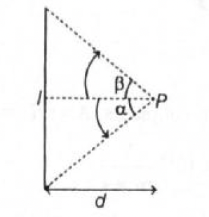
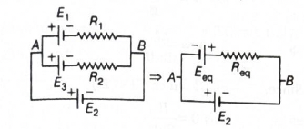
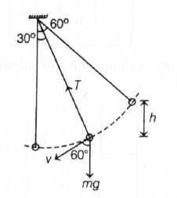
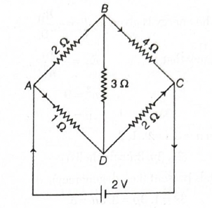

Quick explanation: The body falls from height
\(R\) above Earth's surface, so its initial distance from
Earth's centre is \(2R\), and final distance is \(R\). The
decrease in gravitational potential energy becomes kinetic
energy at the surface.
Final result: Velocity on reaching Earth's
surface \(=\sqrt{gR}\).
Simple memory tip: For large heights comparable
to Earth's radius, do not use constant-\(g\) formula directly.
Use gravitational potential energy \(-\dfrac{GMm}{r}\).
Why the other options are wrong:
\(\sqrt{2gR}\), \(\sqrt{\dfrac{3}{2}gR}\), and \(\sqrt{4gR}\) do
not come from the correct gravitational potential energy
difference between \(2R\) and \(R\).
Exam shortcut: If height is comparable to
Earth's radius, use energy conservation with centre-distance
\(r\), not \(mgh\).
Answer: \((b)\) \(5\ A\)
Quick explanation: Average current from an
\(i-t\) graph is total area under the graph divided by total
time. Here the graph forms two triangles, each with area \(5\),
so total area is \(10\), and average current is
\(\dfrac{10}{2}=5\ A\).
BITSAT chapter / topic / subtopic: Current
Electricity → Current - Page P173 Kinematics →
Graph interpretation / Area under graph idea - Page P17
Average current is: \(i_{av}=\dfrac{\text{area under }i-t\text{
graph}}{\text{time interval}}\).
From \(t=0\) to \(t=1\ s\), the graph is a triangle with base
\(1\ s\) and height \(10\ A\).
Area of first triangle: \(\dfrac{1}{2}\times1\times10=5\).
From \(t=1\ s\) to \(t=2\ s\), the graph is again a triangle
with base \(1\ s\) and height \(10\ A\).
Area of second triangle: \(\dfrac{1}{2}\times1\times10=5\).
Total area under the graph: \(5+5=10\).
Total time interval: \(2-0=2\ s\).
Therefore: \(i_{av}=\dfrac{10}{2}=5\ A\).
Final result: Average current \(=5\ A\).
Simple memory tip: Average value from a graph
usually means area under graph divided by total time.
Why the other options are wrong: \(10\ A\) is
only the peak current, not the average. \(3\ A\) and \(4\ A\) do
not match the area-under-graph calculation.
Exam shortcut: This graph is one big triangle
with base \(2\ s\) and height \(10\ A\), so area
\(=\dfrac{1}{2}\times2\times10=10\). Then divide by \(2\ s\) to
get \(5\ A\).
Answer: \((b)\) \(0.5\ J\)
Quick explanation: First check whether the two
blocks move together. The maximum acceleration possible without
slipping is \(\mu g=1\ m/s^2\), while the actual common
acceleration is \(\dfrac{0.5}{3}=\dfrac{1}{6}\ m/s^2\), so there
is no slipping. The lower block exerts friction on the upper
block, and this friction does positive work.
BITSAT chapter / topic / subtopic: Newton's
Laws of Motion → Friction - Page P33 Newton's Laws of
Motion → Motion of bodies in contact - Page P34 Work
and Energy → Work done by a force - Page P58
Total mass of the system is: \(1+2=3\ kg\).
Applied force is: \(F=0.5\ N\).
If both blocks move together, their common acceleration is:
\(a=\dfrac{F}{m_{total}}=\dfrac{0.5}{3}=\dfrac{1}{6}\ m/s^2\).
Maximum acceleration that friction can provide to the upper
block is: \(a_{max}=\mu g=0.1\times10=1\ m/s^2\).
Since \(a=\dfrac{1}{6}\ m/s^2\) is less than \(a_{max}=1\
m/s^2\), there is no relative motion between the blocks.
The upper block is pulled forward only by friction from the
lower block.
Force of friction on the upper block is:
\(f=ma=1\times\dfrac{1}{6}=\dfrac{1}{6}\ N\).
This friction acts in the same direction as the displacement of
the upper block, so work done is positive.
Given displacement of upper block with respect to ground is \(3\
m\).
Work done by lower block on upper block: \(W=f\times
s=\dfrac{1}{6}\times3=0.5\ J\).
Final result: Work done \(=0.5\ J\).
Simple memory tip: If the top block moves
forward due to friction and displacement is also forward,
friction does positive work on the top block.
Why the other options are wrong: Negative
options would mean friction acts opposite to the upper block's
displacement, which is not the case here. \(2\ J\) does not
match \(W=fs\) using the actual static friction needed.
Exam shortcut: First check slipping using
\(a_{max}=\mu g\). If no slipping, use common acceleration and
find friction on the upper block as \(f=ma\).
Answer: \((c)\) \(\dfrac{5w^2L}{8\pi R^2Y}\)
Quick explanation: Both wires are in series, so
the same weight \(w\) stretches both wires. Extension of a wire
is \(\Delta L=\dfrac{FL}{AY}\), and elastic energy stored is
\(\dfrac{1}{2}F\Delta L\). Add the elastic energies of the two
wires.
BITSAT chapter / topic / subtopic: Mechanics of
Solids and Fluids → Elasticity / Hooke's Law - Page P95 Mechanics
of Solids and Fluids → Moduli of Elasticity - Page P96
The two wires are joined end to end, so the same force \(w\)
acts through both wires.
For a wire, extension is: \(\Delta L=\dfrac{FL}{AY}\).
For the wire of radius \(2R\), area is: \(A_1=\pi(2R)^2=4\pi
R^2\).
Extension of this wire is: \(\Delta L_1=\dfrac{wL}{4\pi R^2Y}\).
For the wire of radius \(R\), area is: \(A_2=\pi R^2\).
Extension of this wire is: \(\Delta L_2=\dfrac{wL}{\pi R^2Y}\).
Elastic potential energy stored in a stretched wire is:
\(U=\dfrac{1}{2}K(\Delta L)^2\), where \(K=\dfrac{YA}{L}\).
So total energy is: \(U=\dfrac{1}{2}K_1(\Delta
L_1)^2+\dfrac{1}{2}K_2(\Delta L_2)^2\).
For the first wire: \(K_1=\dfrac{Y(4\pi R^2)}{L}\).
For the second wire: \(K_2=\dfrac{Y(\pi R^2)}{L}\).
This simplifies to: \(U=\dfrac{w^2L}{8\pi
R^2Y}+\dfrac{w^2L}{2\pi R^2Y}\).
Taking common denominator: \(U=\dfrac{w^2L}{8\pi
R^2Y}+\dfrac{4w^2L}{8\pi R^2Y}\).
Therefore: \(U=\dfrac{5w^2L}{8\pi R^2Y}\).
Final result: Elastic potential energy
\(=\dfrac{5w^2L}{8\pi R^2Y}\).
Simple memory tip: Thinner wire stretches more
and stores more energy. The wire with radius \(R\) contributes
more than the wire with radius \(2R\).
Why the other options are wrong: The other
expressions miss either the different cross-sectional areas or
the addition of elastic energy stored in both wires.
Exam shortcut: For wires in series under the
same load, calculate energy of each wire separately and add
them.
Answer: \((c)\) \(16.67\ A\)
Quick explanation: Displacement current is
\(I_d=\varepsilon_0\dfrac{d\phi_E}{dt}\). For a parallel plate
capacitor, \(\phi_E=EA\), so
\(I_d=\varepsilon_0A\dfrac{dE}{dt}\). Substitute \(A=\pi R^2\),
\(R=0.1\ m\), and \(\dfrac{dE}{dt}=6\times10^{13}\
\dfrac{V}{m\times s}\).
Simple memory tip: Changing electric field
produces displacement current, just like changing magnetic flux
produces induced emf.
Why the other options are wrong: \(15.25\ A\),
\(6.25\ A\), and \(4.69\ A\) do not match
\(I_d=\varepsilon_0A\dfrac{dE}{dt}\) with the given radius and
field-change rate.
Exam shortcut: For uniform electric field
between capacitor plates, directly use \(I_d=\varepsilon_0\pi
R^2\dfrac{dE}{dt}\).
Answer: \((d)\) \(1:1\)
Quick explanation: When a biconvex lens is cut
by a plane containing the principal axis, each half has the same
focal length as the original lens. Since power
\(P=\dfrac{1}{f}\), the power of each half remains the same, so
the ratio is \(1:1\).
BITSAT chapter / topic / subtopic: Optics
→ Total Internal Reflection → Lenses - Page P228 Optics
→ Refraction of Light → Power of lens - Page P228
Power of a lens is: \(P=\dfrac{1}{f}\), where \(f\) is the focal
length.
Here the biconvex lens is cut into two symmetrical halves by a
plane containing the principal axis.
This type of cutting reduces the aperture of each lens, but the
curvature of the two refracting surfaces remains the same.
Since focal length depends on refractive index and radii of
curvature, the focal length of each half remains the same as the
original lens.
Therefore, power of each half is also: \(P'=\dfrac{1}{f}=P\).
Hence the ratio of powers of the two halves is: \(P:P=1:1\).
Final result: Ratio of power of two halves
\(=1:1\).
Simple memory tip: Cutting along the principal
axis changes aperture, not focal length.
Why the other options are wrong: \(1:2\),
\(2:1\), and \(1:4\) would imply unequal or changed focal
lengths, but both symmetrical halves have the same focal length.
Exam shortcut: Lens cut along principal axis:
power unchanged. Lens cut perpendicular to principal axis: focal
length changes.
Answer: \((b)\) \(\dfrac{13}{2}p_0V_0\)
Quick explanation: Heat is absorbed in
\(D\rightarrow A\) at constant volume and \(A\rightarrow B\) at
constant pressure. For a monoatomic gas, \(C_V=\dfrac{3}{2}R\)
and \(C_P=\dfrac{5}{2}R\). Using the \(PV\) graph gives total
heat supplied
\(=\dfrac{3}{2}p_0V_0+5p_0V_0=\dfrac{13}{2}p_0V_0\).
BITSAT chapter / topic / subtopic: Heat and
Thermodynamics → Thermodynamic Processes - Page P144 Heat
and Thermodynamics → First Law of Thermodynamics - Page
P144
In the cycle, heat is supplied during the processes where
temperature increases.
From \(D\rightarrow A\), volume is constant and pressure
increases from \(p_0\) to \(2p_0\), so heat is supplied at
constant volume.
From \(A\rightarrow B\), pressure is constant at \(2p_0\), and
volume increases from \(V_0\) to \(2V_0\), so heat is supplied
at constant pressure.
For an ideal monoatomic gas: \(C_V=\dfrac{3}{2}R\) and
\(C_P=\dfrac{5}{2}R\).
Heat supplied in \(D\rightarrow A\): \(Q_{DA}=nC_V\Delta T\).
From ideal gas relation, \(nR\Delta T=\Delta(PV)\). For
\(D\rightarrow A\), \(V=V_0\), so: \(nR\Delta T=p_0V_0\).
Therefore: \(Q_{DA}=\dfrac{3}{2}p_0V_0\).
Heat supplied in \(A\rightarrow B\): \(Q_{AB}=nC_P\Delta T\).
For \(A\rightarrow B\), pressure is \(2p_0\) and \(\Delta
V=V_0\), so: \(nR\Delta T=2p_0V_0\).
Total heat required:
\(Q=Q_{DA}+Q_{AB}=\dfrac{3}{2}p_0V_0+5p_0V_0\).
\(Q=\dfrac{13}{2}p_0V_0\).
Final result: Heat required
\(=\dfrac{13}{2}p_0V_0\).
Simple memory tip: On a \(PV\) cycle, heat is
supplied when temperature increases. For ideal gas, temperature
follows \(PV\).
Why the other options are wrong: \(p_0V_0\),
\(\dfrac{11}{2}p_0V_0\), and \(4p_0V_0\) miss either the
constant-volume heating part or the correct monoatomic gas heat
capacities.
Exam shortcut: For monoatomic gas, use
\(C_V=\dfrac{3}{2}R\), \(C_P=\dfrac{5}{2}R\), and \(nR\Delta
T=\Delta(PV)\).
Quick explanation: For a finite straight
current-carrying wire, magnetic field at a point at
perpendicular distance \(d\) is found using the angles made by
the ends of the wire. With the sign convention shown in the
figure, the expression becomes \(B=\dfrac{\mu_0I}{4\pi
d}(\sin\theta_1-\sin\theta_2)\).
BITSAT chapter / topic / subtopic: Magnetic
Effect of Current → Biot-Savart's Law - Page P191 Magnetic
Effect of Current → Applications of Biot-Savart's Law -
Page P191

Magnetic field due to a finite straight current-carrying wire is
derived from Biot-Savart's law.
If \(d\) is the perpendicular distance of the point from the
wire, the magnetic field depends on the angles subtended by the
two ends of the wire at that point.
In the standard signed-angle form: \(B=\dfrac{\mu_0I}{4\pi
d}(\sin\alpha-\sin\beta)\).
In the given figure, \(\alpha=\theta_1\) and \(\beta=\theta_2\).
Final result: Magnetic field at \(P\) is
\(\dfrac{\mu_0I}{4\pi d}(\sin\theta_1-\sin\theta_2)\).
Simple memory tip: For finite straight wire,
magnetic field formula uses sine of the end angles, not cosine,
when the angles are measured from the perpendicular line as
shown.
Why the other options are wrong: Option (b)
uses addition instead of the signed difference for this
geometry. Options (c) and (d) use cosine instead of sine, which
does not match the given angle convention.
Exam shortcut: First identify from which line
the angles are measured. In this figure, the answer key uses the
signed sine form: \(\sin\theta_1-\sin\theta_2\).
Answer: \((a)\) \(23\times10^6\ ms^{-2}\)
Quick explanation: A changing magnetic field
induces an electric field, and this electric field accelerates
the electron. Using Faraday's law, \(E=\dfrac{\pi
r^2}{d}\dfrac{dB}{dt}\), and then \(a=\dfrac{eE}{m}\).
BITSAT chapter / topic / subtopic:
Electromagnetic Induction → Faraday's Law of
Electromagnetic Induction - Page P208 Magnetic Effect of
Current → Force on a Charged Particle in a Uniform Magnetic
Field - Page P193
The changing magnetic field induces an electric field inside the
solenoid.
This induced electric field exerts force on the electron:
\(F=eE\).
Therefore, acceleration of the electron is: \(a=\dfrac{eE}{m}\).
From Faraday's law: \(\varepsilon=-\dfrac{d\phi}{dt}\).
Magnetic flux is: \(\phi=BA\).
For the solenoid cross-section: \(A=\pi r^2\), where \(r=0.5\
m\).
So induced emf is: \(\varepsilon=-\pi r^2\dfrac{dB}{dt}\).
Electric field is: \(E=\dfrac{\varepsilon}{d}\), where \(d=0.3\
m\).
Final result: Acceleration of electron
\(=23\times10^6\ ms^{-2}\).
Simple memory tip: Changing \(B\) creates
electric field; electric field pushes charges.
Why the other options are wrong: The other
values do not match Faraday's law combined with
\(a=\dfrac{eE}{m}\).
Exam shortcut: For induced acceleration of
charge, first find induced electric field from changing flux,
then use \(a=\dfrac{qE}{m}\).
Answer: \((a)\) \(n=4\) to \(n=2\)
Quick explanation: For hydrogen-like species,
\(\dfrac{1}{\lambda}=RZ^2\left(\dfrac{1}{n_1^2}-\dfrac{1}{n_2^2}\right)\).
For \(He^+\), \(Z=2\), so to get the same wavelength as
hydrogen, the quantum numbers must be doubled. Thus the matching
transition is \(4\rightarrow2\).
BITSAT chapter / topic / subtopic: Modern
Physics → Spectral series of hydrogen atom - Page P249 Modern
Physics → Bohr's model - Page P248
For hydrogen-like atoms or ions:
\(\dfrac{1}{\lambda}=RZ^2\left(\dfrac{1}{n_1^2}-\dfrac{1}{n_2^2}\right)\).
For hydrogen, \(Z=1\), so:
\(\dfrac{1}{\lambda_1}=R\left(\dfrac{1}{n_1^2}-\dfrac{1}{n_2^2}\right)\).
For \(He^+\), \(Z=2\), so:
\(\dfrac{1}{\lambda_2}=4R\left(\dfrac{1}{n_3^2}-\dfrac{1}{n_4^2}\right)\).
To have the same wavelength, \(\lambda_1=\lambda_2\).
The factor \(4\) in \(He^+\) can be balanced if the quantum
numbers are twice those of hydrogen.
So a hydrogen transition \(2\rightarrow1\) corresponds to a
\(He^+\) transition \(4\rightarrow2\).
Among the options, this is \(n=4\) to \(n=2\).
Final result: Required transition is \(n=4\) to
\(n=2\).
Simple memory tip: For \(He^+\), \(Z=2\), so
same spectral wavelength as hydrogen often comes by doubling the
\(n\)-values.
Why the other options are wrong:
\(6\rightarrow5\) and \(6\rightarrow3\) do not satisfy the same
wavelength condition for the corresponding hydrogen spectral
line.
Exam shortcut: For hydrogen-like ions, always
include \(Z^2\) in the Rydberg formula. Missing \(Z^2\) gives
wrong matching transitions.
Answer: \((b)\) \(\dfrac{I_0}{2}\)
Quick explanation: Phase difference is
\(\phi=\dfrac{2\pi}{\lambda}\times\) path difference. For path
difference \(\dfrac{\lambda}{4}\), \(\phi=\dfrac{\pi}{2}\).
Intensity is \(I=I_0\cos^2\left(\dfrac{\phi}{2}\right)\), so
\(I=I_0\cos^2\dfrac{\pi}{4}=\dfrac{I_0}{2}\).
Since \(\cos\dfrac{\pi}{4}=\dfrac{1}{\sqrt{2}}\), we get:
\(I=I_0\left(\dfrac{1}{\sqrt{2}}\right)^2=\dfrac{I_0}{2}\).
Final result: Intensity \(=\dfrac{I_0}{2}\).
Simple memory tip: Path difference
\(\dfrac{\lambda}{4}\) means phase difference
\(\dfrac{\pi}{2}\), giving half the maximum intensity.
Why the other options are wrong: \(0\) would
occur for destructive interference with path difference
\(\dfrac{\lambda}{2}\). \(\dfrac{3I_0}{8}\) and
\(\dfrac{2I_0}{3}\) do not match
\(I=I_0\cos^2\left(\dfrac{\phi}{2}\right)\).
Exam shortcut: In YDSE intensity questions,
convert path difference to phase difference first, then use
\(I=I_0\cos^2\dfrac{\phi}{2}\).
Answer: \((c)\) \(9\)
Quick explanation: For a telescope adjusted for
parallel rays, magnifying power is \(m=\dfrac{f_o}{f_e}\). Given
magnifying power is \(9\), so directly \(\dfrac{f_o}{f_e}=9\).
Magnifying power of a telescope in normal adjustment is:
\(m=\dfrac{f_o}{f_e}\).
Here \(f_o\) is focal length of objective lens and \(f_e\) is
focal length of eyepiece.
Given magnifying power: \(m=9\).
Therefore: \(\dfrac{f_o}{f_e}=9\).
The distance between objective and eyepiece in normal adjustment
is: \(f_o+f_e=20\ cm\).
If needed, this gives: \(f_o=9f_e\), so \(9f_e+f_e=20\).
Hence: \(10f_e=20\), so \(f_e=2\ cm\) and \(f_o=18\ cm\).
Therefore: \(\dfrac{f_o}{f_e}=\dfrac{18}{2}=9\).
Final result: \(m=9\).
Simple memory tip: In a telescope, magnifying
power is basically objective focal length divided by eyepiece
focal length.
Why the other options are wrong: \(8\), \(7\),
and \(12\) do not match the given magnifying power or the focal
length ratio.
Exam shortcut: If the question asks for
\(\dfrac{f_o}{f_e}\) and gives telescope magnifying power, the
answer is usually directly the magnifying power.
Answer: \((b)\ 2\ \mathrm{A}\) from \(A\) to \(B\)
Quick explanation: The top and bottom branches
form an equivalent source with \(E_{\mathrm{eq}} = 2\
\mathrm{V}\) and \(R_{\mathrm{eq}} = 2\Omega\). This equivalent
source acts along with the middle cell \(E_2 = 2\ \mathrm{V}\),
so the net emf is \(4\ \mathrm{V}\). Hence current through
branch \(AB\) is \(I = \dfrac{4}{2} = 2\ \mathrm{A}\).
BITSAT chapter / topic / subtopic:
Current Electricity \(\rightarrow\) Grouping of cells - P176
Current Electricity \(\rightarrow\) Combination of resistors -
P175
Current Electricity \(\rightarrow\) Kirchhoff's laws - P177

The circuit can be simplified by combining the upper and lower
branches. Since both branches contain equal resistances \(R_1 =
R_2 = 4\Omega\), their equivalent resistance is the parallel
combination: \(R_{\mathrm{eq}} = \dfrac{R_1R_2}{R_1+R_2}\).
Now this equivalent source is in the loop with the middle cell
\(E_2 = 2\ \mathrm{V}\). The two emfs support each other, so the
net emf is: \(E' = E_2 + E_{\mathrm{eq}} = 2 + 2 = 4\
\mathrm{V}\).
Therefore, the current through branch \(AB\) is: \(I =
\dfrac{E'}{R_{\mathrm{eq}}} = \dfrac{4}{2} = 2\ \mathrm{A}\).
Final result: Current through branch \(AB\) is
\(2\ \mathrm{A}\), from \(A\) to \(B\).
Simple memory tip: In cell-combination
circuits, first reduce the side branches into one equivalent
cell and one equivalent resistance. After that, the circuit
often becomes a simple \(I = \dfrac{E}{R}\) question.
Why the other options are wrong:
\((a)\) zero is wrong because there is a net emf of \(4\
\mathrm{V}\).
\((c)\) has the correct magnitude but wrong direction.
\((d)\) is not consistent with \(I = \dfrac{4}{2} = 2\
\mathrm{A}\).
Exam shortcut: Equal cells and equal
resistances usually make the equivalent emf equal to the cell
emf itself. Here \(E_{\mathrm{eq}} = 2\ \mathrm{V}\), then add
\(E_2\), giving \(4\ \mathrm{V}\), and divide by \(2\Omega\).
Answer: \((c)\ 9\)
Quick explanation: The oil drop is stationary,
so its weight is balanced by electric force. Therefore,
\(\dfrac{4}{3}\pi r^3\rho g = neE\). Substituting the given
values gives \(n \approx 9\).
BITSAT chapter / topic / subtopic:
Electrostatics \(\rightarrow\) Electric field - P156
Mechanics of Solids and Fluids \(\rightarrow\) Density / fluids
- P97
Since the oil drop is stationary, the upward electric force
balances the downward weight: \(qE = mg\).
The mass of the spherical oil drop is: \(m = \dfrac{4}{3}\pi
r^3\rho\).
Therefore: \(\dfrac{4}{3}\pi r^3\rho g = qE\).
If \(n\) excess electrons are present, then the charge magnitude
is: \(q = ne\).
Final result: Number of excess electrons on the
oil drop is approximately \(9\).
Simple memory tip: For a charged drop held
stationary in an electric field, think: electric force up equals
weight down. So directly use \(qE = mg\).
Why the other options are wrong:
\((a)\), \((b)\), and \((d)\) do not match the force-balance
calculation.
Wrong answers usually come from forgetting to convert
\(\mu\mathrm{m}\) to metre or \(\mathrm{g/cm^3}\) to
\(\mathrm{kg/m^3}\).
Exam shortcut: Do not try to find mass
separately in many steps. Directly write \(n = \dfrac{4\pi
r^3\rho g}{3eE}\), then substitute SI units.
Answer: \((b)\ 639\ \mathrm{nm}\)
Quick explanation: In YDSE, the distance
between two consecutive bright fringes is the fringe width
\(\beta = \dfrac{\lambda D}{d}\). Here the separation between
first and second bright fringes is one fringe width, so
\(\lambda = \dfrac{\beta d}{D}\). Substitution gives \(639\
\mathrm{nm}\).
Final result: Wavelength of light used is
\(639\ \mathrm{nm}\).
Simple memory tip: In YDSE, distance between
two neighbouring bright fringes is always one fringe width. So
first-to-second bright fringe distance directly equals
\(\beta\).
Why the other options are wrong:
\((a)\) \(520\ \mathrm{nm}\) and \((c)\) \(715\
\mathrm{nm}\) do not match \(\lambda = \dfrac{\beta d}{D}\).
\((d)\) is wrong because \(639\ \mathrm{nm}\) is present as
option \((b)\).
Exam shortcut: Convert both millimetre
quantities to \(10^{-3}\ \mathrm{m}\), multiply them, divide by
\(D\), and finally convert metre to nanometre using \(1\
\mathrm{nm}=10^{-9}\ \mathrm{m}\).
Answer: \((d)\)
Quick explanation: The circuit first inverts
both inputs, giving \(\overline{A}\) and \(\overline{B}\), and
then sends them into a NAND gate. Hence \(Y =
\overline{\overline{A}\cdot\overline{B}} = A+B\), by De Morgan's
theorem. So the output is high whenever \(A\) or \(B\) is high,
matching option \((d)\).
The first gate on input \(A\) is a NOT gate, so its output is
\(\overline{A}\).
The first gate on input \(B\) is also a NOT gate, so its output
is \(\overline{B}\).
These two inverted signals enter a NAND gate. Therefore: \(Y =
\overline{\overline{A}\cdot\overline{B}}\).
Using De Morgan's theorem:
\(\overline{\overline{A}\cdot\overline{B}} = A+B\).
So the whole circuit behaves like an OR gate. That means \(Y\)
is \(1\) whenever at least one of \(A\) or \(B\) is \(1\).
The truth table is:
\(A\)
\(B\)
\(Y=A+B\)
0
0
0
0
1
1
1
0
1
1
1
1
Now compare this OR-type output with the given waveforms. The
output should be low only when both \(A\) and \(B\) are low, and
high everywhere else.
This matches option \((d)\).
Final result: Correct output waveform is option
\((d)\).
Simple memory tip: NOT on both inputs followed
by NAND gives OR. In symbols:
\(\overline{\overline{A}\cdot\overline{B}} = A+B\).
Why the other options are wrong:
\((a)\), \((b)\), and \((c)\) do not follow the OR-gate rule
\(Y=A+B\).
They either miss intervals where \(A\) or \(B\) is high, or
show high output where both inputs are low.
Exam shortcut: First simplify the gate
expression before checking waveforms. Once you get \(Y=A+B\),
just remember: OR output is \(0\) only for \(A=0, B=0\).
Quick explanation: For a spring-mass
oscillator, \(T = 2\pi\sqrt{\dfrac{m}{k_{\mathrm{eq}}}}\). In
(a), \(k_{\mathrm{eq}}=k\); in (b), two identical springs in
series give \(k_{\mathrm{eq}}=\dfrac{k}{2}\); and in (c), two
identical springs in parallel give \(k_{\mathrm{eq}}=2k\). Hence
the time-period ratio is \(1 : \sqrt{2} : \dfrac{1}{\sqrt{2}}\).
Final result: The required ratio is \(1 :
\sqrt{2} : \dfrac{1}{\sqrt{2}}\).
Simple memory tip: Series springs become
softer, so time period increases. Parallel springs become
stiffer, so time period decreases.
Why the other options are wrong:
\((b)\), \((c)\), and \((d)\) do not correctly use
\(k_{\mathrm{series}}=\dfrac{k}{2}\) and
\(k_{\mathrm{parallel}}=2k\).
The most common mistake is reversing series and parallel
spring stiffness.
Exam shortcut: Since
\(T\propto\dfrac{1}{\sqrt{k_{\mathrm{eq}}}}\), just compare
effective spring constants: \(k,\dfrac{k}{2},2k\). Their time
periods become \(1,\sqrt{2},\dfrac{1}{\sqrt{2}}\).
Answer: \((a)\ 13.4\ \mathrm{W}\)
Quick explanation: Tension does no power
because it is perpendicular to the bob's velocity. Only gravity
contributes power, so \(P = mgv\cos60^\circ\). Find speed from
energy conservation using \(v=\sqrt{2gh}\), where
\(h=l(\cos30^\circ-\cos60^\circ)\).
BITSAT chapter / topic / subtopic:
Work and Energy \(\rightarrow\) Power - P60
Work and Energy \(\rightarrow\) Law of Conservation of energy -
P60
Oscillations \(\rightarrow\) Simple Harmonic Motion - P112

Power is given by: \(P = \vec{F}\cdot\vec{v} = Fv\cos\phi\),
where \(\phi\) is the angle between force and velocity.
For the pendulum bob, two forces act: tension \(T\) and weight
\(mg\).
Tension acts along the string, while velocity is tangential to
the circular path. These are perpendicular, so power due to
tension is zero.
Therefore, the power delivered by all forces is actually the
power delivered by gravity only.
At \(\theta = 30^\circ\), the component of weight along the
direction of velocity gives: \(P = mgv\cos60^\circ\).
Now we need the speed \(v\) of the bob at \(\theta=30^\circ\).
Since the bob is released from rest at \(60^\circ\), loss of
gravitational potential energy becomes kinetic energy.
The vertical fall is: \(h = l(\cos30^\circ-\cos60^\circ)\).
Final result: The power delivered by all forces
is \(13.4\ \mathrm{W}\).
Simple memory tip: In pendulum motion, tension
changes direction but not speed, because tension is always
perpendicular to velocity. Gravity is the force that changes
speed.
Why the other options are wrong:
\((b)\) and \((c)\) come from using an incorrect height drop
or wrong angle in the power formula.
\((d)\) is wrong because total power is not zero; tension
gives zero power, but gravity gives non-zero power.
Exam shortcut: For pendulum power questions,
immediately write: power of tension \(=0\). Then use only
gravity: \(P=mgv\cos\phi\), after finding \(v\) from energy
conservation.
Answer: \((a)\ \dfrac{R}{20t^2}\)
Quick explanation: The inclination of
projectile with horizontal becomes zero at maximum height,
because the vertical velocity becomes zero there. So \(t =
\dfrac{u\sin\theta}{g}\). Also, total range is \(R = u\cos\theta
\times 2t\). Combining these gives \(\cot\theta =
\dfrac{R}{2gt^2} = \dfrac{R}{20t^2}\).
BITSAT chapter / topic / subtopic:
Kinematics \(\rightarrow\) Projectile - P20
Kinematics \(\rightarrow\) Equation of motion for a body under
gravity - P18
When the projectile reaches maximum height, its vertical
component of velocity becomes zero. That is why its inclination
with the horizontal becomes zero.
Time to reach maximum height is: \(t = \dfrac{u\sin\theta}{g}\).
Rearranging: \(u = \dfrac{gt}{\sin\theta}\).
Since time of ascent is \(t\), total time of flight is \(2t\).
Horizontal range is: \(R = u\cos\theta \times 2t\).
Divide both sides by \(\sin\theta\): \(\cot\theta =
\dfrac{R}{2gt^2}\).
Given \(g = 10\ \mathrm{m/s^2}\), so: \(\cot\theta =
\dfrac{R}{2\times10t^2} = \dfrac{R}{20t^2}\).
Final result: \(\cot\theta =
\dfrac{R}{20t^2}\).
Simple memory tip: In projectile motion, at the
top point, vertical velocity is zero but horizontal velocity
remains. So "inclination becomes zero" means "maximum height".
Why the other options are wrong:
\((b)\) misses the factor \(2\) from total time of flight
\(=2t\).
\((c)\) and \((d)\) do not follow from combining the range
formula and time-to-maximum-height formula.
Exam shortcut: If \(t\) is time to maximum
height, then total flight time is \(2t\). Use \(R =
u\cos\theta(2t)\) immediately.
Answer: \((c)\ 5\)
Quick explanation: Since the dust particle is
suspended, electric force balances its weight: \(qE = mg\). If
\(n\) electrons are removed, \(q = ne\). So \(neE = mg\), giving
\(n=5\).
BITSAT chapter / topic / subtopic:
Electrostatics \(\rightarrow\) Electric field - P156
Electrostatics \(\rightarrow\) Coulomb's law / electric force -
P156
First convert the mass into SI unit: \(m = 4\times10^{-12}\
\mathrm{mg}\).
Final result: \(5\) electrons were removed from
the neutral dust particle.
Simple memory tip: "Suspended" means no
acceleration. So upward electric force exactly balances downward
weight.
Why the other options are wrong:
\((a)\), \((b)\), and \((d)\) do not satisfy \(neE=mg\).
A common mistake is converting \(\mathrm{mg}\) incorrectly.
Remember \(1\ \mathrm{mg}=10^{-6}\ \mathrm{kg}\).
Exam shortcut: For a suspended charged
particle, directly write \(n = \dfrac{mg}{eE}\).
Answer: \((a)\ \sqrt{20}\ \mathrm{m/s}\)
Quick explanation: First find spring constant
using \(F=kx\), so \(k=100\ \mathrm{N/m}\). From the instant
just before touching the spring to maximum compression, the
block's kinetic energy plus gravitational work becomes spring
energy: \(\dfrac{1}{2}mv^2 + mgh = \dfrac{1}{2}kx^2\).
Substitution gives \(v=\sqrt{20}\ \mathrm{m/s}\).
BITSAT chapter / topic / subtopic:
Work and Energy \(\rightarrow\) Law of Conservation of energy -
P60
Work and Energy \(\rightarrow\) Work-Energy Theorem - P59
Mechanics of Solids and Fluids \(\rightarrow\) Hooke's Law - P95
The spring is compressed \(1\ \mathrm{m}\) by a force of \(100\
\mathrm{N}\). Using Hooke's law: \(F = kx\).
Now consider the motion from the instant the block just touches
the spring to the instant of maximum compression.
Just before touching the spring, the block has kinetic energy:
\(\dfrac{1}{2}mv^2\).
During compression, the block moves \(2\ \mathrm{m}\) further
down the incline. The vertical drop is: \(h = 2\sin30^\circ =
2\times\dfrac{1}{2}=1\ \mathrm{m}\).
At maximum compression, the block is momentarily at rest, and
energy is stored in the spring: \(\dfrac{1}{2}kx^2\), where
\(x=2\ \mathrm{m}\).
By conservation of energy: \(\dfrac{1}{2}mv^2 + mgh =
\dfrac{1}{2}kx^2\).
Final result: Speed of the block just before it
touches the spring is \(\sqrt{20}\ \mathrm{m/s}\).
Simple memory tip: The spring does not stop the
block immediately. During compression, gravity still helps the
block move down, so include \(mgh\) along with initial kinetic
energy.
Why the other options are wrong:
\((b)\), \((c)\), and \((d)\) come from incorrect energy
balance or forgetting the vertical drop during spring
compression.
The height during compression is not \(2\ \mathrm{m}\); it
is \(2\sin30^\circ = 1\ \mathrm{m}\).
Exam shortcut: First get \(k\) from \(F=kx\).
Then use \(v^2 = \dfrac{kx^2}{m} - 2gh\), where
\(h=x\sin\theta\) for motion along an incline.
Quick explanation: First calculate the value:
\(Y=\sqrt{AB}=\sqrt{1.0\times2.0}=1.414\ \mathrm{m}\approx1.4\
\mathrm{m}\). For \(Y=\sqrt{AB}\), fractional error is
\(\dfrac{\Delta Y}{Y}=\dfrac{1}{2}\left(\dfrac{\Delta
A}{A}+\dfrac{\Delta B}{B}\right)\). This gives \(\Delta
Y\approx0.2\ \mathrm{m}\).
BITSAT chapter / topic / subtopic:
Units and Measurement \(\rightarrow\) Errors in Measurement -
P3
Units and Measurement \(\rightarrow\) Combination of Errors -
P3
Units and Measurement \(\rightarrow\) Rules for Arithmetic
Operation with Significant Figures - Page P4
Let: \(Y = \sqrt{AB}\).
Calculate the central value: \(Y =
\sqrt{1.0\times2.0}=\sqrt{2}=1.414\ \mathrm{m}\).
Rounding to proper significant figures: \(Y \approx 1.4\
\mathrm{m}\).
Since \(Y=(AB)^{1/2}\), the fractional error is: \(\dfrac{\Delta
Y}{Y} = \dfrac{1}{2}\left(\dfrac{\Delta A}{A}+\dfrac{\Delta
B}{B}\right)\).
Therefore: \(\Delta Y = 0.15\times1.414 \approx 0.212\
\mathrm{m}\).
Rounding the error to one significant digit: \(\Delta Y \approx
0.2\ \mathrm{m}\).
So the correct reported value is: \(\sqrt{AB}=1.4\
\mathrm{m}\pm0.2\ \mathrm{m}\).
Final result: \(\sqrt{AB}=1.4\
\mathrm{m}\pm0.2\ \mathrm{m}\).
Simple memory tip: For multiplication, divide,
powers and roots, use fractional errors. For square root,
multiply the fractional error by \(\dfrac{1}{2}\).
Why the other options are wrong:
\((a)\) and \((c)\) overestimate the error.
\((b)\) keeps too many digits in the final reported value
and does not match the rounded uncertainty format.
Exam shortcut: For \(Y=\sqrt{AB}\), write
directly: percentage or fractional error in \(Y\)
\(=\dfrac{1}{2}\)(fractional error in \(A\) + fractional error
in \(B\)).
Answer: \((a)\ \dfrac{\alpha^2}{2\beta}\)
Quick explanation: The angular velocity is
given as \(\omega=\alpha-\beta t\), which matches the form
\(\omega=\omega_0-\gamma t\). So initial angular velocity is
\(\alpha\) and angular retardation is \(\beta\). Before
stopping, final angular velocity becomes zero, so using
\(\omega^2=\omega_0^2+2a\theta\), we get
\(\theta=\dfrac{\alpha^2}{2\beta}\).
Given angular velocity: \(\omega=\alpha-\beta t\).
Compare this with the standard uniformly retarded rotational
motion equation: \(\omega=\omega_0-\gamma t\).
Therefore: \(\omega_0=\alpha\), and angular retardation
\(=\beta\).
Before the body stops, final angular velocity becomes:
\(\omega=0\).
Use the rotational kinematic equation:
\(\omega^2=\omega_0^2+2a\theta\).
Since the angular acceleration is opposite to motion,
\(a=-\beta\). Hence: \(0^2=\alpha^2+2(-\beta)\theta\).
So: \(0=\alpha^2-2\beta\theta\).
Therefore: \(\theta=\dfrac{\alpha^2}{2\beta}\).
Final result: The angle rotated before stopping
is \(\dfrac{\alpha^2}{2\beta}\).
Simple memory tip: This is exactly like linear
motion: if \(v=u-at\), then stopping distance is
\(\dfrac{u^2}{2a}\). For rotation, stopping angle is
\(\dfrac{\omega_0^2}{2\alpha_{\mathrm{ret}}}\).
Why the other options are wrong:
\((b)\), \((c)\), and \((d)\) incorrectly mix \(\alpha\),
\(\beta\), and time-dependent terms.
The body stops when \(\omega=0\), not when \(\alpha-\beta\)
is used directly as a final value.
Exam shortcut: Whenever \(\omega=\alpha-\beta
t\), read it as initial angular velocity \(=\alpha\),
retardation \(=\beta\), then directly use stopping angle
\(=\dfrac{\omega_0^2}{2\beta}\).
Quick explanation: Electric field due to a
point charge is \(\vec{E}=\dfrac{kq}{r^3}\vec{r}\). Here the
position vector is \(\vec{r}=(30\hat{i}+30\hat{j})\times10^{-2}\
\mathrm{m}\), and \(r=30\sqrt{2}\times10^{-2}\ \mathrm{m}\).
Substitution gives
\(\vec{E}=200\sqrt{2}(\hat{i}+\hat{j})\mathrm{NC^{-1}}\).
BITSAT chapter / topic / subtopic:
Electrostatics \(\rightarrow\) Coulomb's law - P156
Electrostatics \(\rightarrow\) Electric field - P156
The charge is placed at the origin and the field is required at
\((30,30,0)\ \mathrm{cm}\).
Convert the position vector into metre:
\(\vec{r}=(30\hat{i}+30\hat{j})\times10^{-2}\ \mathrm{m}\).
Magnitude of \(\vec{r}\) is: \(r=\sqrt{30^2+30^2}\
\mathrm{cm}=30\sqrt{2}\ \mathrm{cm}=30\sqrt{2}\times10^{-2}\
\mathrm{m}\).
On simplifying:
\(\vec{E}=200\sqrt{2}(\hat{i}+\hat{j})\mathrm{NC^{-1}}\).
Final result: Electric field is
\(200\sqrt{2}(\hat{i}+\hat{j})\mathrm{NC^{-1}}\).
Simple memory tip: For electric field at a
point away from the origin, do not forget direction. Use vector
form \(\vec{E}=\dfrac{kq}{r^3}\vec{r}\), not just
\(E=\dfrac{kq}{r^2}\).
Why the other options are wrong:
\((a)\) gives only a scalar-type answer and misses
direction.
\((b)\) and \((d)\) do not match the correct unit conversion
and vector calculation.
Exam shortcut: First convert cm to m, then use
\(\vec{r}\) and \(r\) separately. The direction here must be
along \(\hat{i}+\hat{j}\), because the point is equally away in
\(x\) and \(y\).
Answer: \((c)\ remains same
Quick explanation: The circuit is a balanced
Wheatstone bridge. In a balanced bridge, the two middle points
are at the same potential, so no current flows through the
bridge resistor. Therefore, removing the \(3\Omega\) resistor
does not change the equivalent resistance.
BITSAT chapter / topic / subtopic:
Current Electricity \(\rightarrow\) Combination of resistors -
P175
Current Electricity \(\rightarrow\) Kirchhoff's laws - P177
Current Electricity \(\rightarrow\) Applications of Kirchhoff's
laws - P177

The network can be redrawn as a Wheatstone bridge.
In the bridge, the arms are in the ratio:
\(\dfrac{2\Omega}{1\Omega}=\dfrac{4\Omega}{2\Omega}=2\).
Since the ratios are equal, the Wheatstone bridge is balanced.
In a balanced Wheatstone bridge, the points connected by the
middle resistor are at the same potential.
Here, points \(B\) and \(D\) are at the same potential. So the
\(3\Omega\) resistor connected between \(B\) and \(D\) is
ineffective.
Since no current flows through the \(3\Omega\) resistor,
removing it does not change the circuit's equivalent resistance.
Final result: Equivalent resistance remains the
same when the \(3\Omega\) resistor is removed.
Simple memory tip: In a balanced Wheatstone
bridge, the middle branch is like a sleeping branch: no current
flows through it, so removing it makes no difference.
Why the other options are wrong:
\((a)\) is wrong because the removed resistor was not
affecting the circuit.
\((b)\) is wrong for the same reason: removing an
ineffective branch cannot decrease the equivalent
resistance.
\((d)\) is wrong because option \((c)\) correctly describes
the effect.
Exam shortcut: For bridge circuits, first check
ratio balance. If \(\dfrac{R_1}{R_2}=\dfrac{R_3}{R_4}\), the
middle resistor carries no current.
Answer: \((c)\ 1.6\%\)
Quick explanation: On stretching, the volume of
the wire remains constant. Since \(R=\rho\dfrac{l}{A}\) and
\(l=\dfrac{V}{A}\), we get \(R=\rho\dfrac{V}{A^2}\). As area
depends on diameter as \(A\propto D^2\), resistance varies as
\(R\propto\dfrac{1}{D^4}\), so \(\dfrac{\Delta
R}{R}=-4\dfrac{\Delta D}{D}=1.6\%\).
BITSAT chapter / topic / subtopic:
Current Electricity \(\rightarrow\) Ohm's law - P174
Current Electricity \(\rightarrow\) Effect of temperature on
resistance - P175
Mechanics of Solids and Fluids \(\rightarrow\) Strain - P95
For a wire: \(R=\rho\dfrac{l}{A}\).
When the wire is stretched, its volume remains constant:
\(V=Al\).
Hence: \(l=\dfrac{V}{A}\).
Substitute this in the resistance formula:
\(R=\rho\dfrac{V}{A^2}\).
Since the cross-sectional area of a wire is: \(A=\dfrac{\pi
D^2}{4}\), we get: \(A^2=\dfrac{\pi^2D^4}{16}\).
Final result: The percentage change in
resistance is \(1.6\%\).
Simple memory tip: For a stretched wire of
constant volume, resistance depends very strongly on diameter:
\(R\propto\dfrac{1}{D^4}\). Small decrease in diameter gives
four times percentage increase in resistance.
Why the other options are wrong:
\((a)\), \((b)\), and \((d)\) do not use the fourth-power
dependence of resistance on diameter.
The common mistake is using \(R\propto\dfrac{1}{D^2}\), but
because volume is constant, length also changes, giving
\(R\propto\dfrac{1}{D^4}\).
Exam shortcut: For stretching of wire with
constant volume, directly use: percentage change in \(R = -4\)
times percentage change in \(D\).
Answer: \((b)\ 1.5\ \mathrm{s}\)
Quick explanation: First find the speed just
before the first impact using \(v=\sqrt{2gh}\). After bouncing,
the upward speed becomes \(ev\). Time from first bounce to
second hit is the time of upward-and-downward motion:
\(t=\dfrac{2ev}{g}\), which gives \(1.5\ \mathrm{s}\).
BITSAT chapter / topic / subtopic:
Kinematics \(\rightarrow\) Equation of motion for a body under
gravity - P18
Impulse and Momentum \(\rightarrow\) Collision - P46
The ball falls freely from height \(h=4.9\ \mathrm{m}\). Speed
just before hitting the ground is: \(v=\sqrt{2gh}\).
Substituting \(g=9.8\ \mathrm{m/s^2}\) and \(h=4.9\
\mathrm{m}\): \(v=\sqrt{2\times9.8\times4.9}=9.8\
\mathrm{m/s}\).
The coefficient of restitution is: \(e=\dfrac{3}{4}\).
So speed just after the first bounce is: \(v' = ev =
\dfrac{3}{4}\times9.8\).
After the bounce, the ball goes up and then comes down again.
The time of flight for this upward projection is:
\(t=\dfrac{2v'}{g}\).
Final result: The ball hits the surface second
time after \(1.5\ \mathrm{s}\).
Simple memory tip: After bounce, treat the ball
like a body thrown vertically upward with speed \(ev\). Its
total time to return to ground is \(\dfrac{2ev}{g}\).
Why the other options are wrong:
\((a)\), \((c)\), and \((d)\) do not match the rebound time
after applying \(e=\dfrac{3}{4}\).
The common mistake is using the time of the first fall
instead of the time after the first bounce.
Exam shortcut: If the ball is dropped from
height \(h\), first impact speed is \(\sqrt{2gh}\). After
bounce, use \(t=\dfrac{2e\sqrt{2gh}}{g}\).
Answer: \((c)\ \dfrac{2c}{3}\)
Quick explanation: For a gas,
\(v_{\mathrm{rms}}=\sqrt{\dfrac{3RT}{M}}\) and speed of sound is
\(v_{\mathrm{sound}}=\sqrt{\dfrac{\gamma RT}{M}}\). So
\(\dfrac{v_{\mathrm{sound}}}{v_{\mathrm{rms}}}=\sqrt{\dfrac{\gamma}{3}}\).
With degree of freedom \(f=6\),
\(\gamma=1+\dfrac{2}{f}=\dfrac{4}{3}\), giving
\(v_{\mathrm{sound}}=\dfrac{2c}{3}\).
BITSAT chapter / topic / subtopic:
Heat and Thermodynamics \(\rightarrow\) Kinetic Theory of Gases
- P141
Heat and Thermodynamics \(\rightarrow\) Law of Equipartition of
Energy - P141
Waves \(\rightarrow\) Factors affecting the speed of sound in a
gaseous medium - P126
The rms speed of gas molecules is:
\(v_{\mathrm{rms}}=\sqrt{\dfrac{3RT}{M}}\).
Given: \(v_{\mathrm{rms}}=c\).
The velocity of sound in a gas is:
\(v_{\mathrm{sound}}=\sqrt{\dfrac{\gamma RT}{M}}\).
Divide the two equations:
\(\dfrac{v_{\mathrm{sound}}}{v_{\mathrm{rms}}}=\sqrt{\dfrac{\gamma
RT/M}{3RT/M}}\).
So:
\(\dfrac{v_{\mathrm{sound}}}{v_{\mathrm{rms}}}=\sqrt{\dfrac{\gamma}{3}}\).
For a molecule with degree of freedom \(f\):
\(\gamma=1+\dfrac{2}{f}\).
Here \(f=6\), so:
\(\gamma=1+\dfrac{2}{6}=1+\dfrac{1}{3}=\dfrac{4}{3}\).
Since \(v_{\mathrm{rms}}=c\):
\(v_{\mathrm{sound}}=\dfrac{2c}{3}\).
Final result: Velocity of sound in the gas is
\(\dfrac{2c}{3}\).
Simple memory tip: For gases, connect sound
speed and rms speed using
\(\dfrac{v_{\mathrm{sound}}}{v_{\mathrm{rms}}}=\sqrt{\dfrac{\gamma}{3}}\).
Then use degree of freedom to get \(\gamma\).
Why the other options are wrong:
\((a)\) would come from taking \(\gamma=1\), which is not
correct here.
\((b)\) does not match \(\gamma=\dfrac{4}{3}\).
\((d)\) equals \(c\), but sound speed is not equal to rms
speed for this gas.
Exam shortcut: If \(f=6\), quickly write
\(\gamma=1+\dfrac{2}{6}=\dfrac{4}{3}\), then
\(v_{\mathrm{sound}}=c\sqrt{\dfrac{4}{9}}=\dfrac{2c}{3}\).